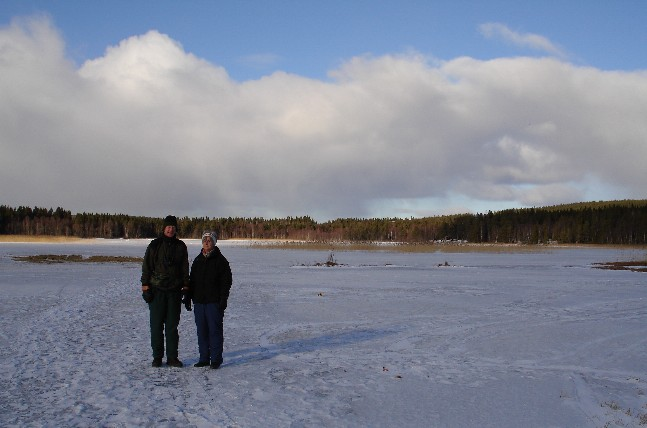
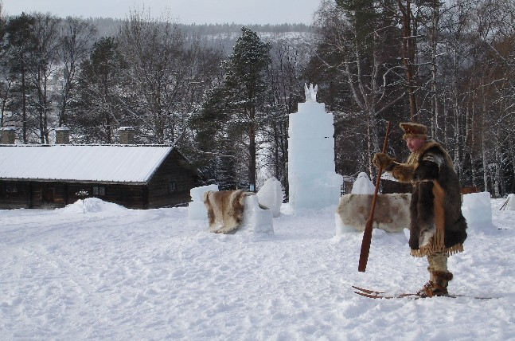
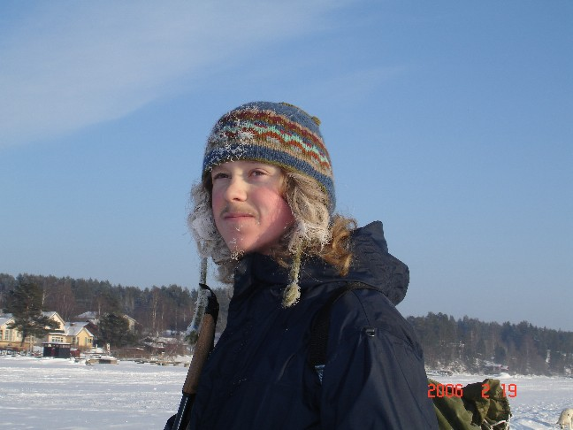

In Winter
Pia and Sven-Martin on the Lillsjö promenad='longer walk'.

At Jamtli one day, a he was showing old-style (200 BCE) skis. There wasn't much glide to them, they are more like snowshoes than skis.

Me with a snowbeard while ice skating on Storsjön.
